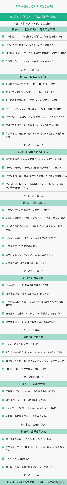
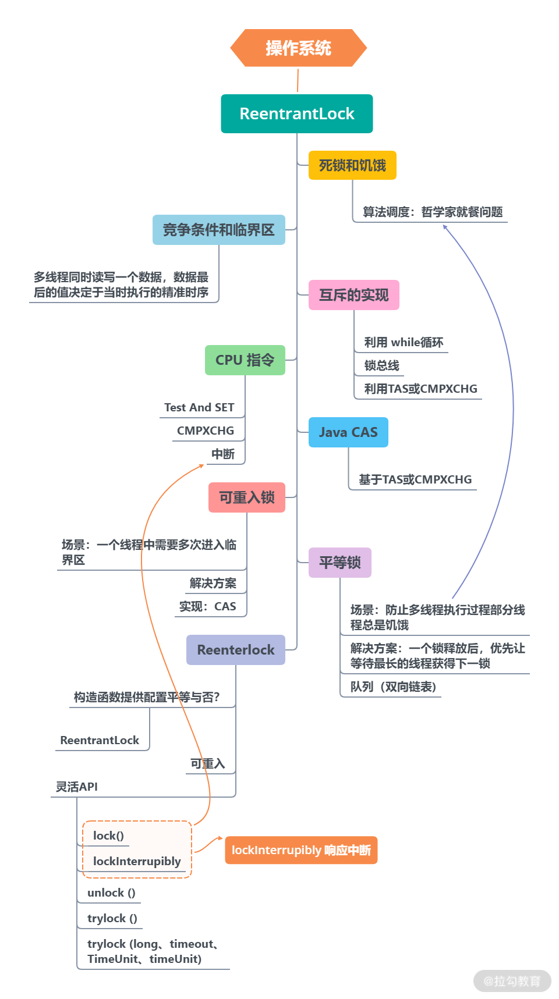
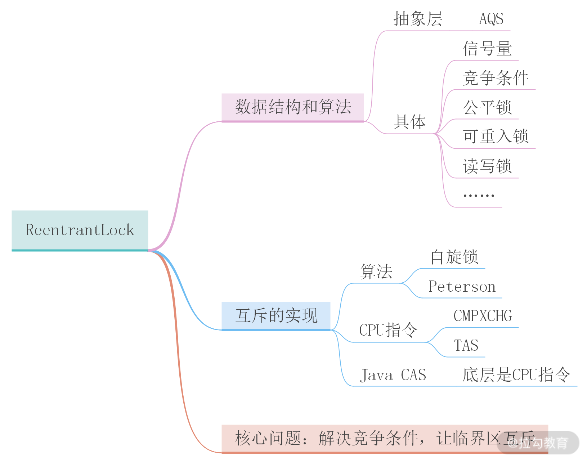

- 00 开篇词 为什么大厂面试必考操作系统？.md.html
- 00 课前必读 构建知识体系，可以这样做！.md.html
- 01 计算机是什么：“如何把程序写好”这个问题是可计算的吗？.md.html
- 02 程序的执行：相比 32 位，64 位的优势是什么？（上）.md.html
- 03 程序的执行：相比 32 位，64 位的优势是什么？（下）.md.html
- 04 构造复杂的程序：将一个递归函数转成非递归函数的通用方法.md.html
- 05 存储器分级：L1 Cache 比内存和 SSD 快多少倍？.md.html
- 05 (1) 加餐 练习题详解（一）.md.html
- 06 目录结构和文件管理指令：rm -rf 指令的作用是？.md.html
- 07 进程、重定向和管道指令：xargs 指令的作用是？.md.html
- 08 用户和权限管理指令： 请简述 Linux 权限划分的原则？.md.html
- 09 Linux 中的网络指令：如何查看一个域名有哪些 NS 记录？.md.html
- 10 软件的安装： 编译安装和包管理器安装有什么优势和劣势？.md.html
- 11 高级技巧之日志分析：利用 Linux 指令分析 Web 日志.md.html
- 12 高级技巧之集群部署：利用 Linux 指令同时在多台机器部署程序.md.html
- 12 (1)加餐 练习题详解（二）.md.html
- 13 操作系统内核：Linux 内核和 Windows 内核有什么区别？.md.html
- 14 用户态和内核态：用户态线程和内核态线程有什么区别？.md.html
- 15 中断和中断向量：Javajs 等语言为什么可以捕获到键盘输入？.md.html
- 16 WinMacUnixLinux 的区别和联系：为什么 Debian 漏洞排名第一还这么多人用？.md.html
- 16 (1)加餐 练习题详解（三）.md.html
- 17 进程和线程：进程的开销比线程大在了哪里？.md.html
- 18 锁、信号量和分布式锁：如何控制同一时间只有 2 个线程运行？.md.html
- 19 乐观锁、区块链：除了上锁还有哪些并发控制方法？.md.html
- 20 线程的调度：线程调度都有哪些方法？.md.html
- 21 哲学家就餐问题：什么情况下会触发饥饿和死锁？.md.html
- 22 进程间通信： 进程间通信都有哪些方法？.md.html
- 23 分析服务的特性：我的服务应该开多少个进程、多少个线程？.md.html
- 23 (1)加餐 练习题详解（四）.md.html
- 24 虚拟内存 ：一个程序最多能使用多少内存？.md.html
- 25 内存管理单元： 什么情况下使用大内存分页？.md.html
- 26 缓存置换算法： LRU 用什么数据结构实现更合理？.md.html
- 27 内存回收上篇：如何解决内存的循环引用问题？.md.html
- 28 内存回收下篇：三色标记-清除算法是怎么回事？.md.html
- 28 (1)加餐 练习题详解（五）.md.html
- 29 Linux 下的各个目录有什么作用？.md.html
- 30 文件系统的底层实现：FAT、NTFS 和 Ext3 有什么区别？.md.html
- 31 数据库文件系统实例：MySQL 中 B 树和 B+ 树有什么区别？.md.html
- 32 HDFS 介绍：分布式文件系统是怎么回事？.md.html
- 32 (1)加餐 练习题详解（六）.md.html
- 33 互联网协议群（TCPIP）：多路复用是怎么回事？.md.html
- 34 UDP 协议：UDP 和 TCP 相比快在哪里？.md.html
- 35 Linux 的 IO 模式：selectpollepoll 有什么区别？.md.html
- 36 公私钥体系和网络安全：什么是中间人攻击？.md.html
- 36 (1)加餐 练习题详解（七）.md.html
- 37 虚拟化技术介绍：VMware 和 Docker 的区别？.md.html
- 38 容器编排技术：如何利用 K8s 和 Docker Swarm 管理微服务？.md.html
- 39 Linux 架构优秀在哪里.md.html
- 40 商业操作系统：电商操作系统是不是一个噱头？.md.html
- 40 (1)加餐 练习题详解（八）.md.html
- 41 结束语 论程序员的发展——信仰、选择和博弈.md.html
00 课前必读 构建知识体系，可以这样做！
我认为，在学习中有一件非常重要的事情，那就是梳理知识体系，所以在进入操作系统课程的学习之前，我想先给你一份这门课程的知识体系（也是一份学习路径），然后再介绍一套我自己梳理知识体系的方法，帮助你更轻松地学好这门课。
课程内容&知识体系
我们先来看下这门课程的知识体系结构，分为 8 个模块，39 个课时，具体如下。
- 模块一：（前置知识）计算机组成原理。 如果你对计算机的组成原理中涉及的比如内存、寄存器工作原理、CPU 指令、总线都是怎么工作的这些基本问题，没有搞清楚，大概率会影响你后续对操作系统的学习。因此，在课程开始前，我先来给你一份操作系统的前置知识，帮助你更好地理解后续内容。
- 模块二：（初探）Linux 指令入门。 这个模块将介绍一些实用的知识，带你入门 Bash 编程，并通过日志分析、性能监控、集群管理等实战场景深入学习 Linux 指令。这些对于日常开发和运维人员来说，都会非常有帮助。
- 模块三：（总纲）操作系统概述。 这部分帮助你了解操作系统的整体设计，介绍内核、用户空间等基本概念，还会介绍操作系统的分类，以及对比一下市面上的操作系统（如 Windows、Linux、Unix、Android 等），让你对整个操作系统生态能有一个整体的认识。
总的来说，模块四 ~ 模块七是我们这门课程的核心内容，也是面试的重点考区。设置这块内容的目的是借助操作系统的知识，帮你思考如何解决实战问题，比如我们反复提及的高并发、数据一致性、大数据存储和网络问题等。
- 模块四：（面试重点）进程和线程。 我会针对大家在面试和工作中最常见的并发和数据同步问题，从进程原理、多线程编程、互斥和乐观锁、死锁和饥饿、调度算法、进程通信等多个方面，同时结合一些语言特性（比如 Java 的语言特性）讲解原理、思考方案及对策。
- 模块五：（面试重点）内存管理。 这部分我们是从页表和 MMU、虚拟化、内存的分配和回收、缓存置换、逃逸分析、三色算法、生代算法等方面入手，帮助你了解内存的工作原理，应对高并发带来的内存使用问题。
- 模块六：（面试重点）文件系统。 这部分内容我们将从两个方面入手，一方面是通过学习 Linux 的文件目录结构，了解 Linux 下不同的文件目录的功能和作用，帮助你把 Linux 用好；另一个方面，从文件系统的底层设计入手，帮助你了解文件系统的设计思路和原理，并且通过讲解数据库的文件系统，比如 MySQL 的 InnoDb、B+Tree 以及 Hadoop 的 HDFS，帮你把文件系统的知识应用到处理海量数据的领域。
- 模块七：（面试重点）网络与安全。 这部分讲解面试中常见的互联网协议群、TCP 和 UDP 协议、Linux 的 I/O 模型、公私钥加密体系，以及一些最基本的计算机网络安全知识，帮助你理解操作系统和网络之间的交互，从而更好地利用操作系统知识设计业务系统的网络架构。
- 模块八：（知识拓展）虚拟化和其他。 最后这部分，我们将从操作系统的角度学习容器化应用（比如 Kubernetes 和 Docker），还会深入讨论 Linux 架构及商业操作系统。这些知识一方面能够帮你和面试官产生更多的共鸣，另一方面还能帮你开拓视野、打开思路，看到未来的发展趋势。
接下来，我给大家梳理一下操作系统整体的知识框架，帮你扫除知识盲区。
从知识结构上来看，操作系统最核心的部分是进程，因为操作系统自己不能提供服务，它要想实现价值，就必须通过安装在系统中的应用程序。而安装好的应用程序，启动后就成了进程，所以说进程处在操作系统知识体系的核心。
了解了以上内容后，我们围绕进程继续梳理，可以发现：
- 进程往往要同时做很多事情，比如浏览器同时要处理网络、又要处理鼠标、还要展示内容，因此有了多线程的概念。
- 进程需要执行用的存储空间，比如需要存程序指令、需要堆栈存执行数据，因此需要内存。
- 进程需要将一部分数据持久的存储下来，因此需要文件系统。
- 进程需要和外界通信，其中一种途径就是网络。
- 开发过程中我们希望进程可以单独部署，于是需要容器。
- 操作系统内核本身也是一个程序，可以理解成一个进程，它同样是需要单独研究的。
所以，进程是核心，内核、多线程、内存、文件系统、网络、容器和虚拟是配套的能力。我们要想展开操作系统知识的学习，就要先从它的核心——进程入手，通过进程将操作系统的知识串联起来，然后逐一击破。
到这里，请你思考一个问题：进程本身是做什么的？
给你一些提示，进程是程序的执行副本，操作系统用进程来分配资源。这里说的资源，就是 CPU 的计算资源、内存和磁盘的存储资源、I/O 设备的使用权等等。所以我们为了更好地学习操作系统，就需要知道计算机是怎么工作的，因此就需要一门前置课——计算机组成原理，我将在模块一把这部分内容给你讲解清楚。
最后，操作系统通常提供 3 类用户接口：
- 给程序员用的 API，比如用 C 语言去调用；
- 给运维人员和管理员用的 Shell；
- 给大众用户的图形界面。
通常用 API 是为了定制操作系统的能力，如果你从事云计算、运维开发、嵌入式方向，那么一定会用到 API 。因为用户界面制作成本最高，能力也最少，所以大部分运维人员和管理人员都用 Shell。从这个角度分析，认真学习 Shell 有助于你快速掌握操作系统的基本功能，而且又不会太难。
以上就是操作系统课程的知识体系结构，你也可以通过目录，快速了解这个课程的内容设置。

我是如何梳理知识体系的？
介绍完操作系统的知识体系，我还想借此再和你聊一聊我梳理知识体系的方法。
这是一套我运用多年的学习方法，它可以帮你节省时间成本，快速精准地查询到你需要的资料。这个学习方法有点像顺藤摸瓜，我自己称之为：“追溯源头、回归本质”。经过这样的思考，可以帮助你把知识学扎实，从而逐渐形成自己的知识体系。
我记得有一个技术大牛曾经说过，程序员最重要的是搜索知识的能力，我非常赞同这个说法，此外，我认为如果你想要长远发展，还应同时具备用结构化的思维去构建知识体系的能力。因为知识成体系后，会形成关联记忆和整体的理解，这种经过深度思考和梳理过的知识才能转化为自己的储备。
下面请你跟我一起进入到场景中，跟着我的思路把你的大脑运转起来。假设，在工作的过程中，我遇到了一块不懂的知识，其中有一个技术名词我不了解它的作用，比如 ReentrantLockLock，那么我该如何解决自己的问题呢？
注意： 你也可以把它替换成任意一个陌生的或者你不理解的技术名词。
首先我会去查阅它的官方文档，然后发现了以下这些线索：
- 构造函数上有个参数在配置锁的公平性；
- ReentrantLockLock 是可重入的；
- 功能类似 synchronized 关键字，但是更灵活；
- 支持 lock、unlock、tryLock 等方法；
- 底层是 AbstractQueuedSynchronizer。
接着，根据我获得的知识，追溯 synchronized 关键字，发现 ReentrantLockLock 都说自己的底层是 AbstractQueuedSynchronizer（AQS），我感觉到 AQS 应该是一个重要的东西。
然后我会去查资料验证我的猜测。这时候，我又得到了一个新的信息：发现AQS是用来实现信号量、条件变量以及其他锁的一个编程框架。
假设我还不知道信号量、条件变量和锁是什么，于是我通过搜索资料，发现这些名词通通指向一门科学，也就是操作系统。
接下来，我会去挑选一门讲操作系统的在线课程或者买一本书来查阅，经过查阅发现这些名词出现在进程和多线程这个部分。然后我翻阅了这两个章节的内容，发现了更多我不知道的知识，比如死锁和饥饿、信号量、竞争条件和临界区、互斥的实现，以及最底层的 CPU 指令。
经过以上过程的推导，我开始在脑海中梳理这些知识点，然后动笔画出了一幅基于思考过程的思维导图，将这些知识点串联起来，如下图所示：

注意，上图梳理出来的知识关系不一定对，但是你一定要敢于去画，这个梳理和探索的过程能够带动你主动思考，锻炼主动解决问题的能力。
输出思维导图后，我将开始学习上面那些超出我现阶段知识储备的内容，然后进行归类和整理。
这时候，我发现公平锁、可重入锁其实都是锁的一种实现，而 Java 中实现锁这个机制用的是 AQS，而 AQS 最基本的问题是要解决资源竞争的问题。
通过学习，我发现资源竞争的问题在操作系统里叫作竞争条件，解决方案是让临界区互斥。让临界区互斥可以用算法的实现，但是为了执行效率，更多的情况是利用 CPU 指令。Java 里用于实现互斥的原子操作 CAS，也是基于 CPU 指令的。
操作系统在解决了互斥问题的基础上，还提供了解决更复杂问题的数据结构，比如说信号量、竞争条件等；而程序语言也提供了数据结构，比如说可重入锁、公平锁。
经过一番探索，我终于弄明白了，原来实际应用场景中对锁有各种各样的需求，因此不仅仅需要信号量等数据结构，甚至还需要一个快速实现这种数据结构的框架，这个框架就是 AQS。我们可以用 AQS 实现 ReentrantLockLock 的功能。

通过上面的方法，我不仅仅可以把 ReentrantLockLockt 学透，而且顺藤摸瓜找到了所有关联的知识点，比如 AQS 和 CAS。比起理解最初的知识点，更重要的是我通过这种方法形成了自己的一个知识体系；而且，我会发现在这个知识体系中，操作系统是起到支撑作用的骨架。
与此同时，我还认识到了计算机语言和操作系统之间的联系非常紧密，操作系统知识是学习计算机语言的根基。于是我开始制定学习计划，投入时间学习操作系统。我更偏爱做一次性的时间投入，以防止日后碎片化学习做多次投入，陷入时间黑洞，而这个嗜好让我受益良多。
寄语
最后，希望今天的课程和学习方法可以帮助到你；也希望你平时遇到未知的问题，尝试使用我今天介绍的方法，学会构建自己的知识体系，提高自己的学商。你可以在留言区给自己立下 Flag，比如给自己定一个具体的目标，或者是打卡你的学习天数，总之希望你不要一看而过，留下你的思考。经过长期的积累，相信你会得到意想不到的收获。